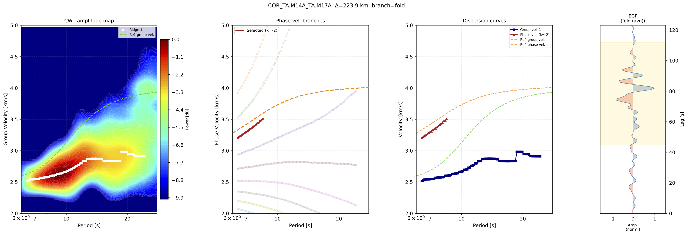
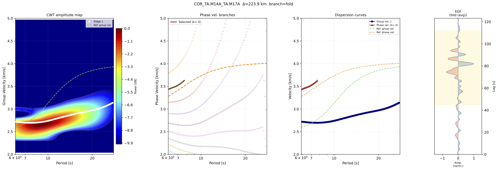

Dispersion Curves Processing
Dispersion Curves Processing in SurfQuake estimates surface-wave group and phase velocity dispersion curves mainly from Empirical Green's Functions (EGFs) produced by the Ambient Noise Tomography workflow, or from earthquake seismograms in SAC/H5 format. Moreover, can manually create an origin-station event record, but it have to be symethic from the central sample.
The module is exposed through the cwt_aftan command and implements an automatic Frequency-Time Analysis workflow. It can use a Complex Morlet Continuous Wavelet Transform (CWT) or the original AFTAN-style filter bank to extract group velocity ridges, estimate phase velocity branches, optionally apply a phase-match filter, and export dispersion tables and diagnostic plots.
The general workflow is:
- Select the EGF branch:
fold,causal, oracausal - Optionally apply a phase-match filter using a reference model
- Compute the time-frequency representation with Morlet CWT or AFTAN filters
- Extract group-velocity ridges
- Apply AFTAN-style jump correction
- Estimate phase velocity branches
- Save
.grp.disp,.phv.disp, and optional PDF plots
The command is especially useful after running ant_cross_stack, because the stacked EGFs stored in HDF5 format can be processed directly.
References
Herrmann, R. B. Computer programs in seismology: An evolving tool for instruction and research. Seismological Research Letters, 2013, vol. 84, no. 6, p. 1081-1088.
Thanks bob!
CWT-AFTAN CLI
This command measures surface-wave dispersion from EGFs or earthquake seismograms.
The default method uses Complex Morlet wavelets to build a frequency-time map and extract group velocity from the maximum energy ridge. The command can also run the AFTAN filter-bank approach with --wavelet aftan.
Usage
>> surfquake cwt_aftan -i [input_path] -o [output_path]
Interactive help
>> surfquake cwt_aftan -h
Key Arguments
-i, --input [REQUIRED] Input folder with H5 EGFs or a single H5/SAC file
-o, --output [REQUIRED] Output folder for dispersion tables and plots
--pattern [OPTIONAL] Glob pattern for folder mode (default: *.H5)
--tmin [OPTIONAL] Minimum period in seconds (default: 5.0)
--tmax [OPTIONAL] Maximum period in seconds (default: 150.0)
--vmin [OPTIONAL] Minimum group velocity in km/s (default: 2.0)
--vmax [OPTIONAL] Maximum group velocity in km/s (default: 5.0)
--wavelet [OPTIONAL] Filter bank: morlet or aftan (default: morlet)
--nf [OPTIONAL] Number of log-spaced frequencies (default: 100)
--w [OPTIONAL] Morlet wavelet cycles (default: 6.0)
--ffact [OPTIONAL] AFTAN filter width factor (default: 0.2)
--branch [OPTIONAL] EGF branch: fold, causal, or acausal (default: fold)
--source_type [OPTIONAL] Source type: egf or earthquake (default: egf)
--min_db [OPTIONAL] dB floor used for display and ridge picking (default: -25.0)
--min_dist_kms [OPTIONAL] Minimum separation between ridge peaks in km/s (default: 0.5)
--num_ridges [OPTIONAL] Number of ridges to extract (default: 3)
--ref_tolerance_kms [OPTIONAL] Maximum distance from reference velocity for ridge acceptance (default: 0.5)
--ref [OPTIONAL] Reference model name or CSV file (see section reference models for more details)
--wave [OPTIONAL] Surface wave type: rayleigh or love
--use_pmf [OPTIONAL] Apply phase-match filtering; requires --ref
--filter_param [OPTIONAL] Phase-match Gaussian window width in seconds (default: 15.0)
--tresh [OPTIONAL] Jump detection threshold for group velocity cleaning (default: 3.0)
--npoints [OPTIONAL] Maximum correctable jump length in periods (default: 5)
--n_branches [OPTIONAL] Number of 2π phase-velocity branches (default: 10)
--force_dist_km [OPTIONAL] Override distance from waveform headers
--plot [OPTIONAL] Save a PDF frequency-time map and dispersion plot
Output files
For each input file, SurfQuake writes:
*.grp.disp Group velocity dispersion table
*.phv.disp Phase velocity branches table
*.pdf Diagnostic plot, only when --plot is used
The group velocity file contains period, group velocity and ridge power:
# Period_s GroupVel_kms Power_dB
The phase velocity file contains all valid phase branches:
# Period_s k PhaseVel_kms
Reference Curves
Surface-wave dispersion images may contain:
- multiple modes
- interfering arrivals
- noise-generated ridges
- branch ambiguities
- weak signal energy at long periods
A reference dispersion curve provides an expected phase velocity trend as a function of period. SurfQuake uses this information to:
- Select physically realistic ridges
- Reject spurious energy maxima
- Stabilize phase velocity branch selection
- Build phase-match filters
- Improve automatic processing in noisy datasets
Without a reference model, automatic ridge extraction can become unstable, especially for long-period or low-SNR measurements.
Built-in models are loaded with --ref. Available shorthand names include:
ak135_earth
ak135_earth_first
ak135_ocean_deep
ak135_ocean_deep_first
ak135_ocean_intermediate
ak135_ocean_intermediate_first
ak135_ocean_shallow
ak135_ocean_shallow_first
Users may also pass a full path to a custom CSV/TXT file, with columns comma separated:
period,phase_velocity_rayleigh,phase_velocity_love,group_velocity_rayleigh,group_velocity_love
1.0,3.1425,3.2721,1.6231,3.0846
1.1,3.3333,3.2941,2.6703,3.0435
1.2,3.3896,3.3214,2.8773,2.9913
Examples CLI
Process all stacked EGFs in a folder
>> surfquake cwt_aftan -i ./output/stacks/ -o ./output/dispersion/ --pattern "*.H5" --plot
Process a period and velocity window
>> surfquake cwt_aftan -i ./output/stacks/ -o ./output/dispersion/ \
--tmin 5 --tmax 80 --vmin 2.0 --vmax 5.0 --plot
Use a reference model
A reference model helps guide ridge picking and enables more stable phase velocity estimation.
>> surfquake cwt_aftan -i ./output/stacks/ -o ./output/dispersion/ \
--tmin 5 --tmax 80 --vmin 2.0 --vmax 5.0 \
--ref ak135_earth --wave rayleigh --plot
Apply phase-match filtering
The phase-match filter is useful for isolating the fundamental mode before extracting the dispersion curve. It requires a reference model.
>> surfquake cwt_aftan -i ./output/stacks/ -o ./output/dispersion/ \
--tmin 5 --tmax 80 --vmin 2.0 --vmax 5.0 \
--ref ak135_earth --wave rayleigh \
--use_pmf --filter_param 15.0 --plot
Process only the causal branch
>> surfquake cwt_aftan -i ./output/stacks/ -o ./output/dispersion/ \
--branch causal --tmin 10 --tmax 40 --plot
Process a single file
>> surfquake cwt_aftan -i ./event.SAC -o ./output/dispersion/ \
--source_type earthquake --plot
Use the original AFTAN filter bank
>> surfquake cwt_aftan -i ./output/stacks/ -o ./output/dispersion/ \
--wavelet aftan --ffact 0.20 --ref ak135_earth --plot
Compare Morlet CWT and AFTAN
>> surfquake cwt_aftan -i ./data/ -o ./output/morlet/ \
--tmin 6 --tmax 28 --vmin 2.0 --vmax 5.0 \
--ref_tolerance_kms 1.0 --min_db -10.0 \
--wavelet morlet --num_ridges 1 --ref ak135_earth --plot

>> surfquake cwt_aftan -i ./data/ -o ./output/aftan/ \
--tmin 6 --tmax 28 --vmin 2.0 --vmax 5.0 \
--ref_tolerance_kms 1.0 --min_db -10.0 \
--wavelet aftan --ffact 0.20 --num_ridges 1 --ref ak135_earth --plot

Recommended workflow after Ambient Noise Processing
After creating cross-correlations and stacks:
>> surfquake ant_create_dict -d ./mseed -i ./meta/inventory.xml -s ./output/data_dict.pkl
>> surfquake ant_process_matrix -c config_process_matrix.json
>> surfquake ant_cross_stack -c config_cross_stack.json
run dispersion processing on the resulting stacks:
>> surfquake cwt_aftan -i ./output/stacks/ -o ./output/dispersion/ \
--pattern "*.H5" --tmin 5 --tmax 80 --vmin 2.0 --vmax 5.0 \
--ref ak135_earth --use_pmf --plot
The resulting .grp.disp files can be used as group velocity measurements, while .phv.disp contains the possible phase velocity branches for each period.
Practical notes
- Use
--branch foldfor standard EGFs when causal and acausal branches are both reliable. - Use
--branch causalor--branch acausalwhen one side of the EGF is cleaner. - Use
--refwhen the ridge is weak, multimodal, or noisy. - Use
--use_pmfonly with a suitable phase velocity reference model. - Decrease
--min_dbto include weaker arrivals; increase it to make ridge picking stricter. - Tune
--treshif jump correction is too aggressive or too permissive. - Use
--force_dist_kmwhen the waveform header does not contain a valid inter-station distance.